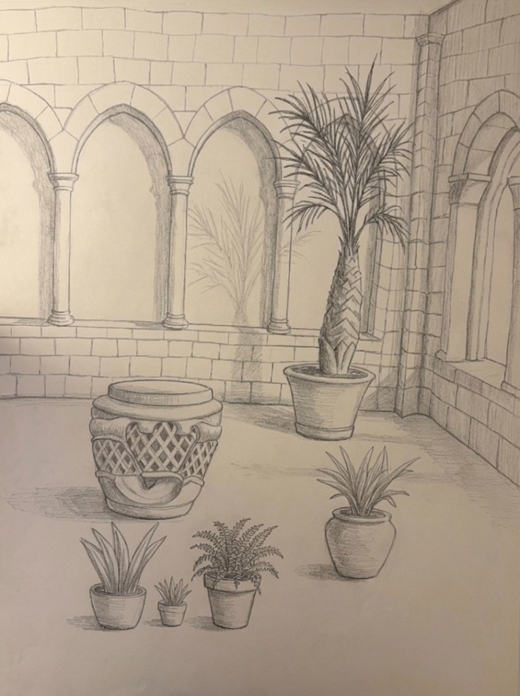
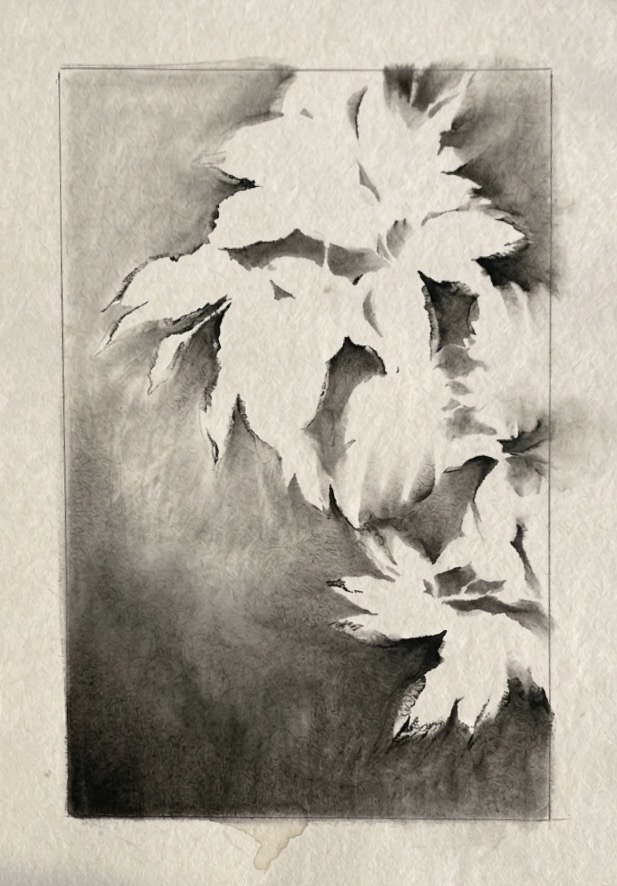
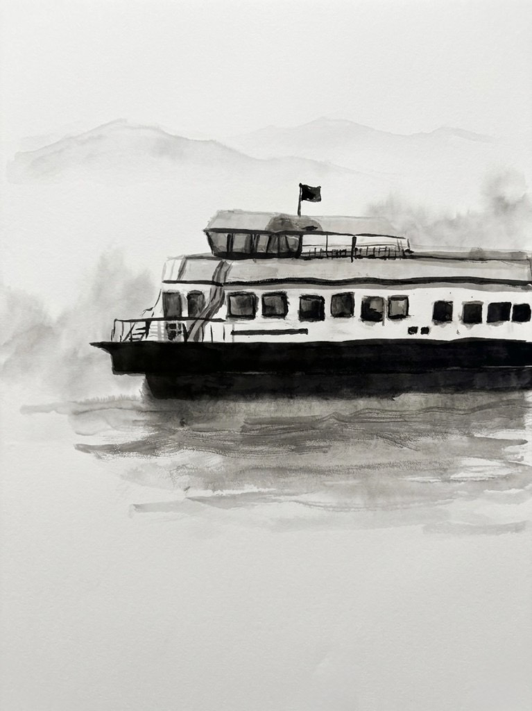

Painting, drawing, and ink work rooted in direct observation.
Each piece is a study in light, form, and the quiet weight of physical space.

i.
The Cloisters
Graphite pencil on paper
A study of the medieval courtyard at The Cloisters in upper Manhattan. The repeating Gothic arches create a rhythm of light and shadow, while potted plants ground the scene in something living and present.

ii.
Botanical Negative
Ink wash on paper
An exercise in negative space — the leaves are defined not by line but by the darkness surrounding them. The ink wash gradients create atmosphere and depth while the forms stay luminous and untouched.

iii.
Morning Ferry
Ink wash on paper
The Staten Island Ferry emerging through morning fog. Heavy blacks at the waterline dissolve into soft atmospheric washes above — capturing the way the city reveals itself gradually from the harbor.